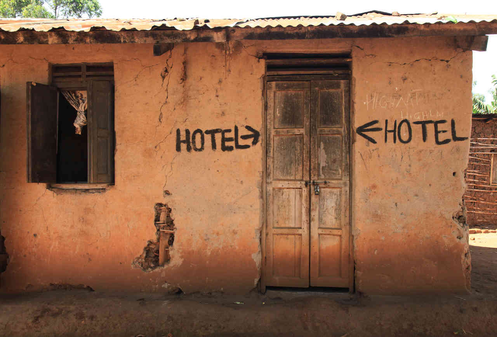
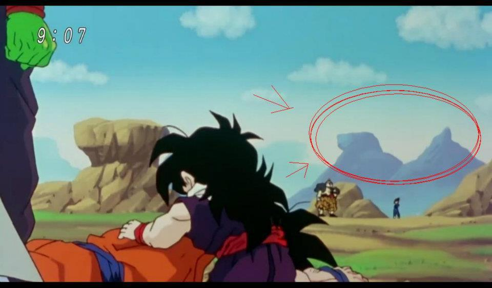
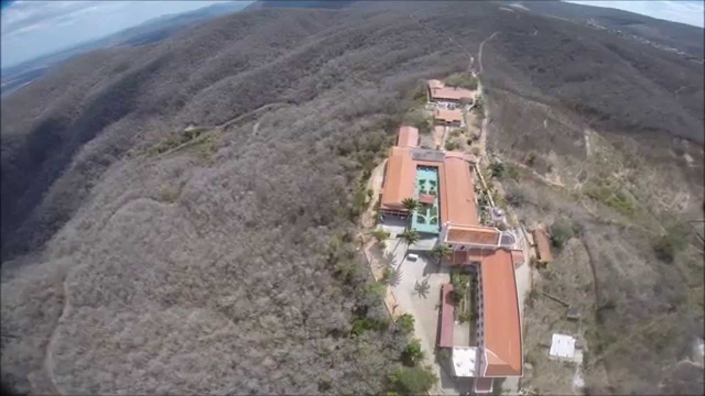
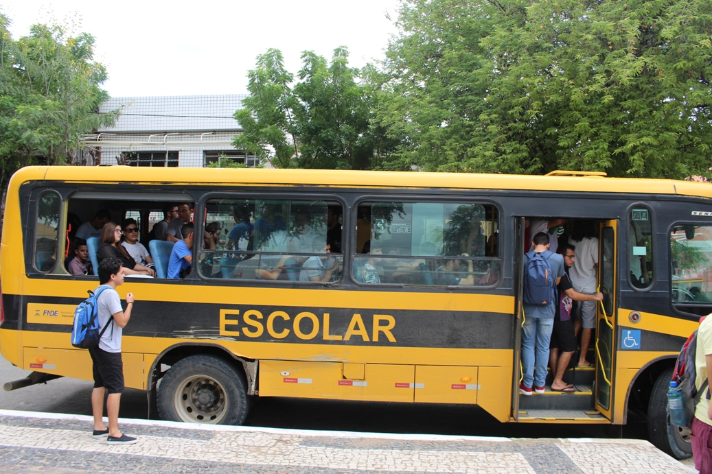

Hotel Luar do Sertão
O Hotel Luar do Sertão oferece estrutura para que o hóspede tenha uma estadia extremamente confortável. A hospedagem de luxo garantirá toda a tranquilidade esperada já que há muitas opções gastronômicas e de lazer. Os quartos são amplos e totalmente estruturados para receber até mesmo quem possui dificuldade de mobilidade. Tudo isso sem contar a oferta de espaços para reuniões e eventos.
Atrações da Região
- Pedra da Galinha Choca
- 
- Pedra da Galinha Choca é o nome dado a um dos mais conhecidos monólitos existentes no município de Quixadá, no Ceará, tendo seu nome derivado de sua curiosa forma. Está localizada a 5 km do centro da cidade. Em suas proximidades foi construído o Açude do Cedro, e juntos, formam a mais conhecida paisagem quixadaense. Por sua beleza e exotismo foi escolhida como locação para filmagens do longa metragem O Cangaceiro Trapalhão de 1983, neste filme a Galinha Choca botava ovos de ouro gigantes e também o filme Área Q em 2012, onde acontecem atividades alienígenas. É possível subir a galinha usando uma trilha de grau médio de dificuldade. Estando lá é possível ver a cidade, praticamente toda a extensão do Açude do Cedro, um grande número de outros monólitos além da paisagem sertaneja.
- Serra do Estevão
- 
- A Serra do Estêvão é uma pequena cadeia montanhosa com aproximadamente 24 km de comprimento por 10 km de largura localizada na região central do estado do Ceará. possui temperaturas mais amenas e pluviometria maior que as regiões circuvizinhas devido sua altitude. Isto faz com que possua fontes d'água permanentes mesmo em secas prolongadas. É também nessa serra que localiza-se o ponto culminante do município, com 755 m de altitude e a nascente do Rio Sitiá.
- Ônibus Amarelo
- 
- Se tiver se sentindo realmente aventureiro, pegue um dos ônibus que levam os estudantes a UFC-Quixadá, e vivencie o calor humano do brasileiro.